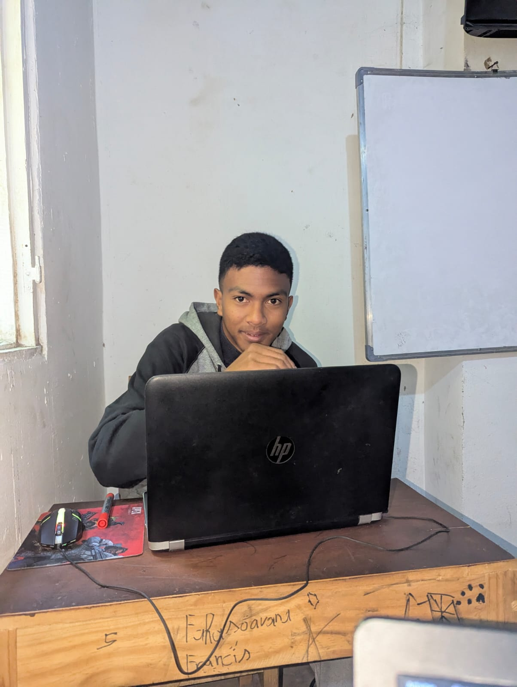

Bonjour, je suis
Étudiant en Informatique — L3 Administration Réseau & Système
|
Passionné par les réseaux, la cybersécurité et les infrastructures système, je construis des solutions robustes et sécurisées.
Qui suis-je ?

Étudiant en L3 Informatique à l'INSI (Institut National Supérieur d'Informatique – Madagascar), spécialisé en Administration Réseau & Système et Base de Données. Passionné par la cybersécurité, la virtualisation et le déploiement d'infrastructures réseau sécurisées.
Sécurité Windows Server, IDS/IPS, Kali Linux, PfSense, VPN, Cisco Packet Tracer...
En savoir plus →Linux Debian, Windows Server, VMware, Proxmox, Docker, Ansible, GitLab CI/CD...
En savoir plus →Technologies & outils maîtrisés
Réalisations techniques & académiques
Déploiement domaine Windows Server avec ADDS, GPO, WDS, gestion des utilisateurs.
HmailServer + IIS 10, serveur impression, BitLocker, sauvegarde Windows.
Samba4, DNS Bind9, DHCP, OwnCloud/Nextcloud, Webmin, partage de fichiers.
Nagios4, Zabbix, GLPI/OCS Inventory, BorgBackup, scripts de monitoring.
Serveur mail Postfix + Dovecot, sauvegarde BorgBackup avec cron.
OSPF, EIGRP, BGP, RIP, routage statique/dynamique sur Cisco Packet Tracer.
ACL, NAT, VPN site-à-site, VLANs, Inter-VLAN Routing, HSRP.
Configuration VoIP Cisco, serveur Asterisk, softphone Zoiper, téléphonie IP.
Déploiement d'une infra réseau sécurisée sous Debian : DNS, DHCP, Web, pare-feu, OpenVPN, Samba, BorgBackup + cron, Scripts Monitoring, redondance.
Mon chemin académique et mes distinctions
Coup de Cœur du jury + participation active aux épreuves CTF (Capture The Flag)
🏆 Coup de CœurCompétition interne centrée sur l'analyse et la visualisation de données.
🥇 1ère PlaceInstitut National Supérieur d'Informatique, spécialité Administration Réseau & Système et Base de Données.
📚 En coursCompétition de développement front-end entre étudiants de l'INSI.
🥈 2ème PlaceDiplômé du Baccalauréat Série D avec mention.
🎓 DiplôméUn projet, une collaboration ou juste un bonjour ? Écrivez-moi !
Ambohimanarina, TANA 6e Arrondissement
rabetsarafinaritra@gmail.com